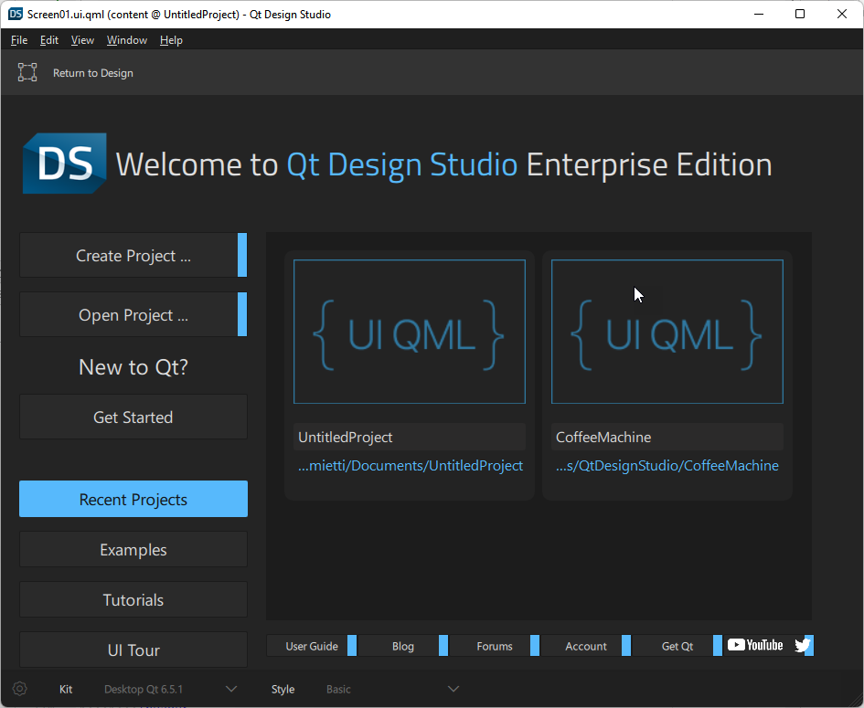
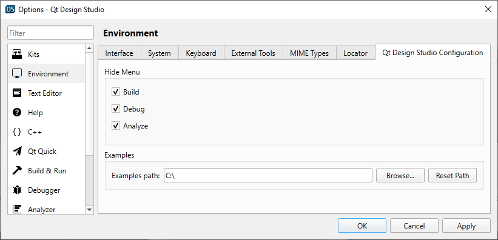

User Interface
When you start Qt Design Studio, it opens to the Welcome mode, where you can:
- Open recent projects
- Create and open projects
- Open tutorials and example projects
- Read news from the online community and Qt blogs
- Create or manage a Qt Account

Customizing the Menu
By default, top-level menu items Build, Debug, and Analyze are not visible. These menu items have options for advanced functionality.
To toggle the visibility of these menu items:
- Go to Preferences.
- On the Environment tab, select Qt Design Studio Configuration.
- Clear the checkbox for the items that you want to be visible.

You need to restart Qt Design Studio to apply changes made to these settings.
Customizing the UI
The following topics describe how to customize the UI:
Viewing Images
The following topics describe how to use the image viewer: